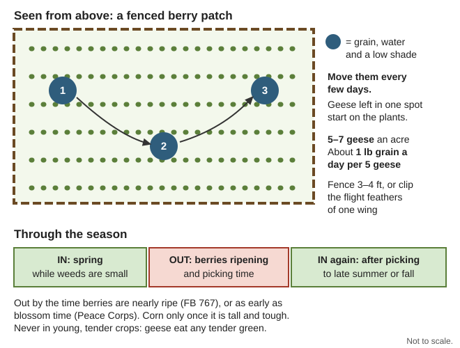
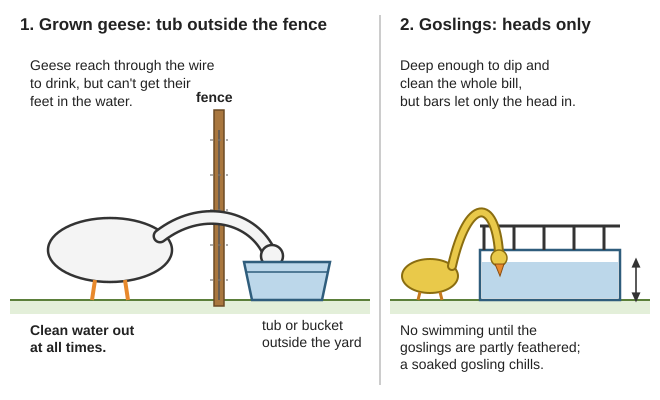
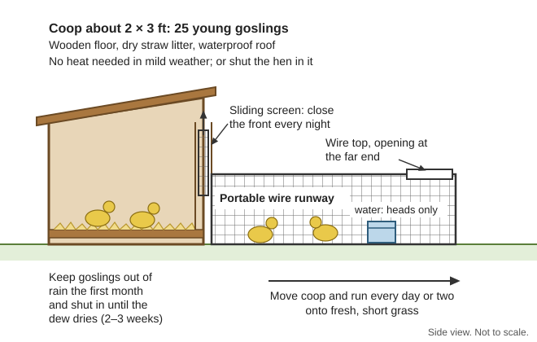
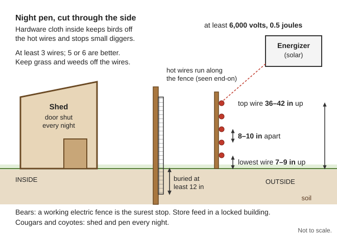
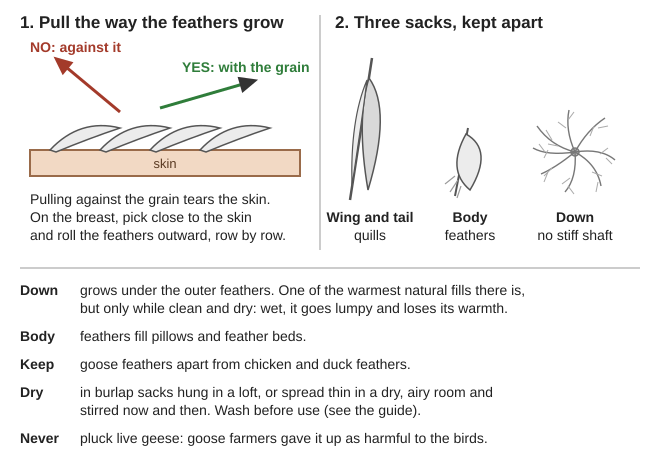

How to keep a few geese that live mostly on grass and give meat, fat, feathers and down with no feed store, vet or power: breeds, weeding with geese, what they can and can't do as alarm "guards", housing and water, pairs, hatching under geese or hens, goslings, feeding, predators, health, butchering and plucking, down, goose fat, the year in the valley, and how many a family needs. The goose books are thin: the main one is USDA Goose Raising (Farmers' Bulletin 767, 1954) in Animals\Poultry, with Raising Healthy Poultry, Practical Poultry Raising and Common Poultry Diseases; butchering is in Small-Livestock\Slaughter-Processing and Animals\Cattle-Horses-Pigs, feather care in Household Discoveries (Homestead-Skills\Household-Make-Do), all under Southern-Oregon\ (download list: local/illinois-valley-files.txt). Where the work is the same as for chickens, this guide points to the Chickens guide. Numbers this guide works out itself say (arithmetic); check them with the Calculator.
The short version
Geese live mostly on grass.15–25 geese an acre of good pasture in summer and fall, with a little grain (FB 767, p. 24). Our summers are dry: plan irrigated pasture or cut green feed, and grain and hay all winter (p. 25).
Shut them in every night, goslings above all (Raising Healthy Poultry, p. 124). Geese raise the alarm; they don't beat coyotes, cougars or bears. A working electric fence is the surest stop for bears (ODFW, p. 2).
Start with pairs or trios:1 gander to 1–2 geese while he is young. Matings last for years, and geese are slow to accept a new mate (FB 767, p. 16).
Hatch under a goose (10–15 eggs) or a hen (4–6). Goose eggs take 28–31 days. Under a hen, sprinkle them with lukewarm water every day for the last 10–14 days (pp. 17–18).
Goslings: dry, warm and locked up. No rain the first month, and no swimming until they are partly feathered (p. 22).
Kill in late fall, after 3–5 weeks of grain in cool weather and when they are free of pinfeathers. Dry-pick to save the down. Never pluck live geese (FB 767, pp. 26, 28).
Down is one of the warmest natural fills, but only clean and dry; wet, it goes lumpy and loses its warmth (AFH 10-644, p. 177).
Choosing breeds
Geese are "large, hardy, aggressive, noisy birds that need little attention when mature" and may live 30 years (Raising Healthy Poultry, p. 124). Farms kept them for meat and feathers; the eggs were a side crop (FB 767, p. 5). Standard weights are for a grown gander and goose; farm geese usually weigh less (same page).
Crosses such as an Emden gander on White Chinese geese, or Chinese with Emden or Toulouse, are common farm geese (FB 767, p. 5; p. 13). Sebastopol and Egyptian geese are for show (p. 12).
Canada geese are a wild species. Kept, they need close confinement, pair only, mature late and lay very few eggs; crossed with tame geese they give a usually sterile hybrid (FB 767, pp. 10–11). Wild geese are game birds with seasons and limits (ODFW, p. 19).
Medium-sized, vigorous birds breed best; extra-large ones don't (FB 767, p. 14). Smaller geese (about 9 lb) are easier for a family flock to manage (FAO, p. 14).
For the valley(rule of thumb): an Emden, a Chinese or a cross of the two. Emdens sit well, big Toulouse breeders want bathing water that our dry summers don't give (FB 767, pp. 6, 14), and the Chinese and African "do best in the tropics" (Raising Healthy Poultry, p. 124), so they should stand our heat. Above all, take what your neighbors have and can trade.
Geese are "the closest grazers known": grown geese and half-grown goslings "can get most of their living from a good green pasture". Don't overstock; too many geese kill the grass (FB 767, p. 13). They are choosy: they won't eat tough, dry grass and some other plants (Practical Poultry Raising, p. 193).
How many:15–25 geese an acre of good pasture in summer and fall, with some grain. With other stock and in orchards they "keep down the coarse grasses and weeds" (FB 767, p. 24).
Our dry season: valley farm ground is used "mainly for irrigated hay and pasture" (Josephine County soil survey, p. 7). When the grass browns, cut them alfalfa, oats, clover, rape, rye, barley, beets, cabbages or green corn stalks (FB 767, p. 24).
Serpentine ground grows poor, low-calcium forage and is poor for stock ponds (soil survey, p. 49); graze geese on better ground and keep oyster shell out (rule of thumb).
Weeding a crop with geese:
Use them where the crop is tough and the weeds are tender. Geese eat "any tender green feed": keep them out of corn until it is "fairly large and tough" (FB 767, p. 24), and out of lettuce, cabbage, beets and other greens they are fed on (rule of thumb). Orchards, vineyards, strawberries and corn with tough stalks all suit (Practical Poultry Raising, pp. 193–194).
Start young. Put in 6-week-old goslings (or older geese) in spring while the weeds are small, with shade, water and a little grain in the evening (Practical Poultry Raising, p. 194; FB 767, p. 24).
Strawberries: 5–7 geese an acre, with grain at about 1 lb a day for five geese (FB 767, pp. 24–25).
Move the feed, water and shade every few days. Geese kept in one place too long "destroy older plants". A low shade of posts and wire roofed with straw can be moved around the field (pp. 24–25).
Take them out before the fruit. FB 767 keeps them in "until the berries are nearly ready to ripen" and puts them back after picking until late summer or fall (pp. 24–25); the Peace Corps book takes them out at blossom time (p. 194). If you can't watch them daily, use blossom time.
Fence 3–4 ft high, or clip the flight feathers of one wing (FB 767, p. 25). Movable electric net rates "highly effective" against dogs, coyotes, foxes and bobcats (UC ANR 8598, p. 5).
Expect to hoe too: some weeds geese won't eat (FB 767, p. 25).

Move feed, water and shade every few days, and take the geese out before the berries ripen (a diagram drawn for this guide).
📣 Geese as alarm "guards": what they can and can't do
What they can do. Geese are kept for their "ability to … act as watch dogs" and are "aggressive, noisy birds" (Raising Healthy Poultry, p. 124). They are "easily disturbed" (FB 767, p. 16), so something new in the yard sets them off. A gander stays by the nest to guard his goose while she lays (p. 15). A watch dog warns of people as well as animals: see the "Early warning with no grid" section of the Home Defense guide.
What they can't do:
Fight off a real predator. Goslings must be locked up at night (Raising Healthy Poultry, p. 124), and a grown goose is a meal for a coyote, bobcat, cougar, bear or loose dog (rule of thumb).
Replace a guardian dog. A guardian dog that stays with the flock works day and night (same page). Night pens and guardian dogs rate "highly effective" against coyotes, cougars and bears (UC ANR 8598, p. 5); geese aren't on that list at all. See the Dogs guide.
Tell friend from foe. They honk at deer, dogs and the neighbors too, so learn their calls. Nesting ganders go for children (rule of thumb).
Using them as an alarm(rule of thumb): put the night pen where you can hear it from the bedroom, near the house and the gate. A goose shut in a shed still honks at something prowling the pen. Count them each evening as they go in.
🏠 Housing, fences and water
Shelter: grown geese "seldom use a house" except in extreme cold or deep snow; keep houses clean (FB 767, p. 14). Here the house is for safety at night: shut stock in sheds at night against cougars (ODFW, p. 2); night pens work against coyotes, cougars and bears (UC ANR 8598, p. 5). A light feed "late in the afternoon helps to bring the goslings back to their coops" (FB 767, p. 24).
Nests (FB 767, pp. 14, 17): outside nest boxes at least 24 in square; a packing box turned open side down with a hole in one end works. Indoors, nests about 18 in square, divided by bricks or thick boards. Straw in all of them, one nest for every three geese, spaced apart; let the geese choose. FB 767's laying coop is 3 ft deep, 6 ft long, 3 ft high in front and 2 ft at the back (p. 14).
Fences:3–4 ft keeps geese in a big field (p. 25); 3 ft in the Peace Corps book (p. 193). Clip one wing if they fly out.
Water:
To drink, always, in tubs or buckets outside the fence so geese reach through and can't get their feet in. Hog fountains suit a bigger flock (FB 767, pp. 24, 26).
Goslings: containers "deep enough that the goslings can clean their bills" but letting in only their heads (p. 23).
Ponds have dangers: botulism grows in stagnant water with rotting plants or carcasses (UF PS044, p. 11), and wild waterfowl bring bird flu (Raising Healthy Poultry, p. 78). A tub you empty and scrub is safer (rule of thumb).

Grown geese drink from a tub outside the fence; goslings get water deep enough for the bill but room for the head only (a diagram drawn for this guide).
📚 Go deeper:FB 767, pp. 13–17 — water, houses and nests, with photos; Chickens guide — "The coop: space, roosts, nests, air and litter".
How many geese per gander (FB 767, p. 16): 1–5, but pairs and trios are commonest and usually best. A young gander gets 1 or 2 geese; small-breed ganders can take more. Emdens did as well at 4 geese to a gander as at 2 or 3. The Peace Corps book asks for at least one gander for every two geese (p. 193).
Mated groups keep to themselves, each near its own nest, so pairs can share one flock (FB 767, pp. 14, 16). Make matings by December; they usually stay the same for years. Geese are slow to take a new mate: when you change them, keep the old partners as far apart as you can (same pages).
Ages (p. 16): Toulouse and Emden breed well in their first laying year; very large birds not before the second. Both sexes breed best at 2–5 years; put older ganders with young geese. Geese lay to 10 or more, ganders keep 5+ years, but younger flocks pay better. Eat late-hatched goslings and those from a goose's first-year eggs; keep breeders from older geese.
Telling sexes apart (p. 16): the gander is bigger and coarser, with a longer neck, bigger head and a high-pitched voice; the goose's cry is lower and deeper. To be sure, press gently around the vent: a goose shows a folded, wrinkled muscle; a gander's organ comes out. Pilgrims show their sex by color (p. 11).
New blood: trade a gander with a neighbor every few years, and pair him up in the fall (rule of thumb).
🥚 Eggs and hatching: under geese or hens
Laying: geese start in February, March or April and lay until late June, mostly in the morning; Chinese start earlier (FB 767, p. 16). Young geese laid about 30 eggs their first year and older geese 40–50; the older geese's eggs hatched 20% better and weighed 7¼–7½ oz against about 5½ (p. 17). Take eggs daily and a goose lays longer; to stop one sitting, shut her 4–7 days in a slat-bottomed crate near the gander (p. 17).
Hatching eggs (FB 767, p. 17): collect twice a day in cold weather, then daily; keep them cool, turn them daily if held over a couple of days, and set them within a week. Wipe dirty eggs with a damp cloth.
Under a goose: she covers 10–15 eggs, depending on her size and the season (p. 17). Give her a place to bathe and she needs no extra moisture (p. 18). Geese "make the best mothers" (p. 22).
4–6 eggs per hen, by her size. Turkeys and Muscovy ducks are bigger and better sitters than hens.
Dust the hen for lice first (see the Chickens guide): she sits a week longer than for her own eggs.
Nest on the ground or on grass turf.Sprinkle the eggs with lukewarm water every day for the last 10–14 days.
Mark the eggs and turn them by hand each day: they are too big for a hen to turn, and keep them moist (Practical Poultry Raising, p. 193). Some breeders think turning unnecessary (FB 767, p. 18).
Candle between day 10 and day 14 and take out clear eggs and dead embryos (FB 767, p. 18).
Timing:28–31 days, the big breeds slowest; Emdens 29–31 (p. 18). Goslings hatch slowly: leave the hen or goose alone, unless some hatch far ahead of the rest; then take the first ones in and keep them warm until the hatch is over (p. 21). Fertility runs about 90% (p. 18).
Machines hatch only 40–60% of goose eggs; a still-air one runs about 102 °F, then 103 °F after day 10, eggs flat, turned right over twice a day and sprayed (FB 767, p. 18). Without power, the goose and the hen are your incubators.
When geese and hens hatch on the same day, give all the goslings to the geese. One hen raises about five goslings (p. 22); up to six in the Peace Corps book (p. 193).
Keep the hen shut in the coop about 2 weeks; the goslings go in and out. In mild weather they need her heat only 10 days to 2 weeks. Dry, clean litter.
Keep goslings out of the rain for the first month, and shut them in each morning until the grass is dry, for 2–3 weeks. No swimming until they are partly feathered. A gosling chilled in a cold rain can sometimes be saved by drying it in flannel near the fire (p. 22).
Grazing from 3–4 days old. Move the coop often onto fresh grass (p. 22). On range, watch for holes they get stuck in and for soaking; give shade in hot weather and keep them apart from older geese (p. 23).
Lock them in every night against predators (p. 21).
Mark them with a small V cut in the web of the foot to record age and family (p. 22).
The brood coop:2 by 3 ft holds 25 young goslings: wooden floor with straw, a sliding screen to close the front at night, and a portable wire runway moved every day or two onto fresh ground (FB 767, p. 21; photo). Goslings brooded by a hen need "good-sized, waterproof coops with board floors" (p. 22).

A brood coop for 25 goslings: shut the screen at night and move coop and run onto fresh grass every day or two (a diagram drawn for this guide).
Without a hen or goose: goslings need heat only a short time: a brooder starts at about 90 °F, cut gradually over 10 days to 3 weeks by the weather (FB 767, p. 21). Keep them warm and dry the first few weeks (Raising Healthy Poultry, p. 124). The fire-free ways to heat a brooder are in the "Raising chicks with no heat lamp" section of the Chickens guide.
🌾 Feeding with no feed store
Grass first. Grown geese "pick up most of their living" except in winter and early in the breeding season (FB 767, p. 25). With plenty of pasture they need no more than 2 lb of extra feed per bird a week (Raising Healthy Poultry, p. 124); the Peace Corps book gives 1–2 lb a week, and only until 12 weeks old (p. 193).
Feed them as soon as they hatch. FB 767 asks for about 18% protein; the other books 20–22% (Raising Healthy Poultry, p. 124). Its plain starter is corn meal and rolled oats with an equal weight of chick mash, fed slightly moist with water or skim milk.
With no store mash: corn meal and rolled oats wet with skim milk, a little chopped hard-boiled egg for protein, and plenty of chopped tender grass, lettuce or cabbage(rule of thumb, from the bulletin's own feeds).
3–4 feeds a day the first week, 2–3 a day to 4 weeks, only what they clean up in 15 minutes. Fine sharp sand or grit always.
After 2–3 weeks on tender grass, cut the grain way down. Many farm flocks lived on grass alone from then on, but growth slowed: 186 goslings on 5 acres needed mash after 8 weeks, and 42 on 1 acre slowed at 7–10 weeks (p. 24). Keep a little grain going.
Grain plus roughage once the grass stops: oats mixed with corn, wheat or barley, and chopped vegetables, clover or alfalfa hay, chopped corn stalks or mold-free silage. Lots of corn makes breeders too fat.
Before laying, about 4 oz of mash and 4 oz of grain a bird a day. A home mash: 2 parts each ground wheat, corn and oats; 1 part each ground barley and bran; 1 part fish or meat meal (same page). Feed it from late winter so goslings hatch when there is green grass (p. 17).
Oyster shell and grit always (p. 26); boiled, dried and crushed eggshells will do for shell (Chickens guide).
Feed safety:
No moldy straw or feed. Mold causes aspergillosis, and mold poisons (aflatoxins) kill ducks in very small amounts (Raising Healthy Poultry, pp. 117–118); treat geese the same (rule of thumb).
Store grain where bears can't reach: a bear-resistant container or a locked building, not the pen (ODFW, p. 1).
Poison plants that grow here include bracken fern, death camas, poison and water hemlock, lupines, horsetail, St. John's wort, creeping buttercup, foxglove, Scotch broom, rhododendron, nightshades, tansy and false hellebore (WSNWCB, pp. 54–55). Penned birds are at more risk than ranging ones, so never throw hedge or weed clippings into the pen (p. 54). The same list names alfalfa, which FB 767 calls excellent goose range (p. 24); feed it in a mix.
Who takes geese: the stock-predator table in UC ANR 8598, p. 5 lists dogs, coyotes, cougars, black bears, foxes and bobcats, all of them here. Great horned owls take "chickens, ducks and other poultry" at night, and hawks carry off small birds by day; hawks and owls are protected by law (Kentucky ID-245, p. 4). For eggs and goslings, the "who did it" table in the Chickens guide fits geese too.
Shut them in a secure place every night and close every door; leave no feed in the run overnight; remove dead birds at once (Kentucky ID-245, p. 6).
Goslings especially: "confined at night and protected against predatory animals" (FB 767, p. 21).
Hardware cloth buried at least 12 inches around the night pen stops diggers (Kentucky ID-245, p. 6).
Bears: an electric fence of at least 3 wires (5–6 better), lowest 7–9 in, top 36–42 in, 8–10 in apart, energizer at least 6,000 volts and 0.5 joules, hardware cloth inside, weeds kept off (ODFW, p. 2). Without the grid that means a solar charger (Off-Grid Power guide).
Cougars: "Fence and shelter livestock. Move them to sheds or barns at night." Oregon law lets a landowner kill a cougar that is damaging livestock; call ODFW (ODFW, p. 2).
A guardian dog that stays with the flock is the day-and-night answer (Kentucky ID-245, p. 6).

A night pen: shed, buried hardware cloth, and hot wires outside to the bear-fence numbers above (a diagram drawn for this guide).
🩺 Health with no vet
"If kept under sanitary conditions, geese are free from insect pests and diseases" (FB 767, p. 13). That means dry litter, clean water, fresh ground for goslings, young birds apart from old ones (p. 23), and a closed flock: no new birds without a month apart (rule of thumb). For medicines in general see Medical READ ME FIRST; the books here give no goose doses.
Sign
Likely cause
What you can do
Gosling limp and cold after rain
Chilled
Dry it in flannel near the fire (FB 767, p. 22); keep the rest in the first month
Clean water always, shade, mist down dust, put off moving them (PNW 783, p. 10)
Your hens lay thin-shelled or shell-less eggs
Egg drop syndrome, carried by geese and ducks with no sign
Keep geese and laying hens apart (rule of thumb) (UF PS044, p. 8)
Bird flu comes from wild birds, "particularly waterfowl" (Raising Healthy Poultry, p. 78). Hunters: dress wild birds away from the flock and change clothes and boots first (ODFW, p. 40).
Lice: dust a broody hen before she sits on goose eggs (FB 767, p. 18); the ash-and-sulfur dust is in the Chickens guide.
Heat: shade from trees, corn, sunflowers or a low straw roof (FB 767, p. 24). Dead birds: bury deep or burn, and never eat or trade one that died of disease (Chickens guide); in fire season, bury (rule of thumb).
🔪 Butchering and plucking
When: fatten 3–5 weeks first, best in cool weather (FB 767, p. 26). Young geese can go at 10–13 weeks as "green geese" of 10–12 lb; after that they are thinner and full of pinfeathers "for several weeks". Farm geese were killed at 5–6 months, 11–15 lb, in late fall (pp. 26–27), when they are "free from the small pinfeathers" and carry the most fat (p. 28). Keep the breeders lean (p. 26).
Before:no feed for about 12 hours, water left in (FB 767, p. 27). Handle them gently: goose flesh "bruises very easily" (same page). Catch a goose by the neck close to the head, then gather the wings against its body and carry it under your arm (rule of thumb).
Killing — practice first, and see the Chickens guide for the setup:
Stun: a goose is too big for an easy neck pull. One hard blow to the top of the head is acceptable for big birds; a clean chop with a sharp blade is too (AVMA, p. 77). FB 767 used a sharp blow to the back of the skull "with a heavy stick" (p. 27).
Bleed: hang it by the feet (a rope on a clothesline works), hold the head, and cut the neck vein on one or both sides with a sharp knife; hold on until bleeding and flapping stop (UMN EB 385, p. 2).
Plucking — "much more difficult" than chickens (FB 767, p. 27). Pick the big wing and tail feathers first and keep them apart from the body feathers and down (p. 28).
Way
How
Source
Dry picking (best for down)
Pull downward, the way the feathers grow; pulling upward tears the skin. On the breast, pick close to the skin and roll outward, row after row
Test any scald by pulling a few feathers (FB 767, p. 28). If you want the down, dry-pick the breast and belly before any scald(rule of thumb).

Pull with the grain, and sort quills, body feathers and down into separate sacks (a diagram drawn for this guide).
After: wash the bird and chill it in cold water, or hang it at 30–36 °F; it takes several hours (FB 767, p. 28). With no ice, use the coldest spring or creek water and cook or can it the same day (rule of thumb). Gut it like a chicken (UMN EB 385; Chickens guide), saving the fat (see "Goose fat"). Yield: geese lose 25–30% of live weight drawn, with head and feet off (FB 767, p. 28). For keeping the meat see the Preserving Food guide.
🪶 Down and feathers for warmth
What down is: "the soft plumage found between the skin and the contour feathers", and geese are a good source. It is "one of the warmest natural materials available when kept clean and dry", but it soaks up rain and sweat, and wet down goes lumpy and loses its insulation (AFH 10-644, p. 177; FM 21-76, p. 177). Goose feathers were worth more than any other poultry feathers, and white more than colored (FB 767, p. 29): worth saving and trading.
Saving it:
Sort as you pluck: wing and tail quills, body feathers, down, each in its own sack; goose apart from chicken and duck (FB 767, p. 28). Big quills make pens (Paper & Ink guide).
Dry: hang dry-picked feathers in burlap sacks in a loft, or spread them in a dry, airy room and stir now and then (p. 28).
Clean (Household Discoveries, p. 257): new feathers "quickly become foul as the grease contained in the quills decays". Beat them between wet burlap to loosen dirt. Soak 3–4 days in clear limewater, or in 1 teaspoon of cooking soda per quart of water. Pour through cheesecloth and rinse in cold water. Then boil them in water with a cupful of borax, drain and squeeze. Hang them in the cheesecloth on a line, shaking now and then, for several days. Don't use soap. Lime burns skin and eyes: gloves and goggles (rule of thumb).
Store them dry in a cloth bag in a dry place until you have enough (p. 39).
Using it:
Pillows and feather beds take the body feathers. To move feathers from one tick to another, open a little of the seam, baste the new tick's opening over it, and shake them across (Household Discoveries, p. 54).
Quilts: make blocks 2–3 ft square, each sewn into a bag on three sides, filled, tied at intervals and sewn together; no quilting frame is needed (p. 55, written for cotton batting). For down, use smaller pockets so it can't all slide to one end, and tightly woven cloth so it can't work through (rule of thumb). A flattened quilt fluffs up again if shaken, brushed and sunned for a few hours (p. 257).
Our winters are wet: use down for bedding and dry cold, keep it under a shell, and wear wool in the rain (rule of thumb). See the "Dressing for our cold-wet winters" section of the Clothing & Leather guide.
Never pluck live geese: it was "almost entirely discontinued" because "most goose farmers consider it harmful to the birds" (FB 767, p. 28).
🫙 Goose fat
Where it comes from: "When the weather gets cold in the fall, geese put on considerable fat" (FB 767, p. 28). Geese raised on grass without grain "are likely to be thin"; they fatten best in cool weather on grain fed freely for 3–5 weeks (p. 26).
Fattening (FB 767, p. 27): three feeds a day, or two of mash and one of whole corn, oats or barley, at regular times; little exercise in a small yard; some hay or pulped vegetables; and water they can get only their heads into. The bulletin's mash is mostly corn meal (45%) and ground oats, barley or wheat (35%). Force-feeding gives a fatty, swollen liver and isn't worth the labor (same page).
In the kitchen: goose meat is "thoroughly infiltrated with fat" (Boston Cooking-School Cook Book, p. 250). Families "draw off much of the fat as grease" while it cooks (FB 767, p. 28). Roast on a rack so the bird sits clear of its own fat, at 325 °F; goose is done at 180–185 °F inside the thick of the breast (Wyoming, p. 2). Pour the fat off into a jar as it gathers(rule of thumb).
Rendering the raw fat (pull the fat pads from inside the body when you gut it (rule of thumb)); the method is the one for lard (Minnesota, pp. 2–3):
Chill the fat at once and render within about 5–7 days.
Cut it small. Put a little water in a clean kettle (no copper), start on low heat, stir often, and keep it at 235–245 °F.
Stop when the bubbling stops and the cracklings float, a medium chestnut brown.
Strain through double cheesecloth into scalded jars, filled to the top; cool fast; store cool and dark.
Uses: cooking and baking fat, a winter source of calories (Food Security guide), and soap. For soap, boil scraps with a little salt water, let the fat set into a cake, and dry it well or it won't keep sweet (Household Discoveries, p. 179). More on rendering and rescuing rancid fat is in Food from Scratch.
🗓️ The goose year in the Illinois Valley
Months
Goose work
Nov–Dec
Rains bring the grass back (rule of thumb). Kill fattened geese while it's cool and they're free of pinfeathers (FB 767, p. 28); render fat, dry feathers indoors. Settle the breeding pairs and trios by December (p. 14). Grain and roughage once the grass stops (p. 25).
Jan–Feb
Laying mash and grain to bring geese into lay, so goslings hatch when grass is green (p. 17); Chinese lay first (p. 16). Nests out; collect eggs twice a day in the cold (p. 17).
Mar–Apr
Laying. Set eggs under geese and broody hens; goslings 28–31 days later (p. 18). Grazing from 3–4 days, dry and shut in at night (p. 22).
May–Jun
Laying ends late June (p. 16). Weeders into the berries and orchard while the weeds are small; out before the berries ripen (pp. 24–25). Green geese at 10–13 weeks if you need meat now (p. 26).
Jul–Sep
Dry season, fire and smoke: shade, water always, cut green feed or irrigated pasture (p. 24; PNW 783, p. 10). Weeders back in the berries after picking (FB 767, p. 25). No open burning (Wildfire guide).
Oct
Pick the keepers: medium-sized, vigorous, from older geese (FB 767, pp. 14, 16). Fatten the rest 3–5 weeks on grain as the weather cools (p. 26).
👪 How many geese for a family
Start:one gander and two geese (a trio), or two pairs: "pair or trio matings are most common and usually give the best results" (FB 767, p. 16).
Eggs: about 30 a goose the first year and 40–50 after (p. 17): two older geese lay 80–100 big eggs(arithmetic).
Goslings: each goose can sit on 10–15 and each broody hen on 4–6 (p. 17). If about half the eggs you set grow into geese, a trio gives 15–20 goslings a year(rule of thumb).
Meat: at 5–6 months a goose weighs 11–15 lb alive (p. 27) and loses 25–30% drawn (p. 28), so about 8–11 lb of dressed bird, plus fat and down. Fifteen geese ≈ 120–165 lb(arithmetic).
Grass: at 15–25 geese an acre (p. 24), a trio and their goslings need about an acre of good pasture through summer and fall, more if it isn't watered (arithmetic).
Grain: at 4 oz of mash and 4 oz of grain a day (p. 25), three breeders eat about 180 lb in a 120-day winter(arithmetic), plus 3–5 weeks of free grain for each goose you fatten. A flock fed grain freely on thin range ate 100 lb a bird from January to July (pp. 25–26). Good grass cuts all of this.
Keeping it going: keep a young goose or two coming on: younger flocks pay better, and old geese hatch better eggs (pp. 16–17). Trade ganders with neighbors.
🧯 If this goes wrong
Problem
Likely cause and fix
Geese haven't started laying by spring
Too little feed in late winter; give laying mash and grain (FB 767, pp. 17, 25); first-year geese lay late and few (p. 17)